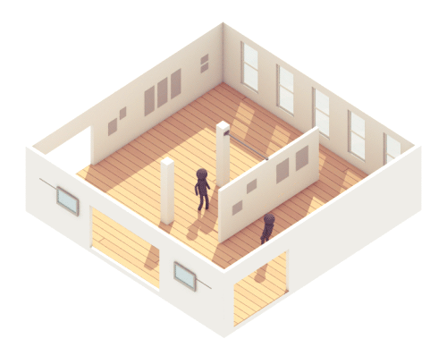

<mat-toolbar color="primary">
  <button [matMenuTriggerFor]="FloorsMenu" mat-icon-button class="example-icon" aria-label=" icon-button with menu icon">
    <mat-icon>menu</mat-icon>
  </button>
  <mat-menu #FloorsMenu="matMenu">
    <button mat-menu-item (click)="goCreate()">
      <span>Create Floor</span>
    </button>
    <button mat-menu-item (click)="goToEdit()">
      <span>Edit Floor</span>
    </button>
    <button mat-menu-item (click)="goToListFloorOfBuilidng()">
      <span>List Floors of a building</span>
    </button>
    <button mat-menu-item (click)="goToGestorDeCampus()">
      <span>Back</span>
    </button>


  </mat-menu>

  <span>Floors</span>
  <span class="spacer"></span>
  <button mat-icon-button class="example-icon" aria-label=" icon-button with menu icon" (click)="goToLogin()">
    <mat-icon>home</mat-icon>
  </button>
</mat-toolbar>
<body class="Floor">
<div class="container">
  <h1 class="text-center">Welcome to Floors page</h1>
  
</div>
</body>
